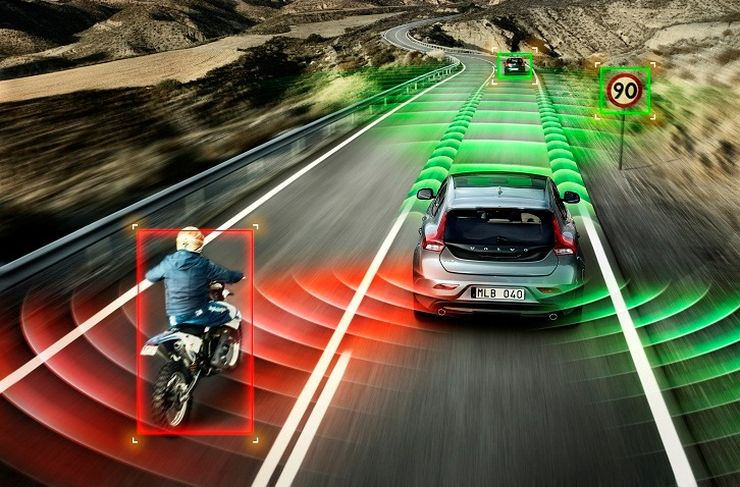

Voiture autonome
Les voitures intelligentes sont l'avenir de la société.
Des capteurs sont ajoutés sur ces véhicules pour augmenter leur autonomie. Ainsi plus besoin de tenir le volant et de regarder la route.
Les capteurs, disposés partout sur la surface du véhicule, sont reliés à un ordinateur de bord qui s'occupe d'interpréter ces données pour réagir en conséquence.
Mise en situation dans la vie réelle

Dans une voiture il y a beaucoup d'angles morts que l'Homme ne peut pas voir. Les capteurs (radars/lidars...) se chargent de combler ce déficit.
Les avantages et les inconvénients
Avantages :
- soulage l'utilisateur d'une fatigue optique
- réduit les accidents
- constante évolution du système
Inconvénients :
- risque de panne fréquentes ---> révision régulière
- risque de piratage informatique de la voiture
- plus couteux